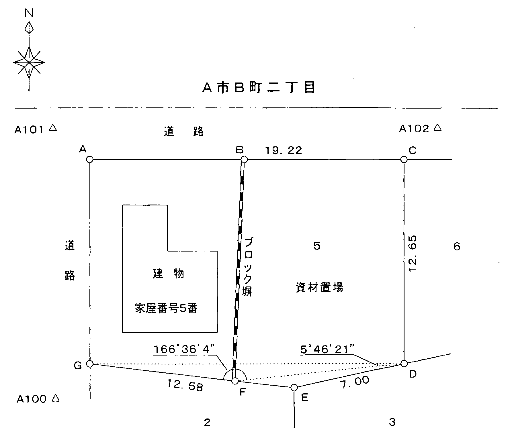
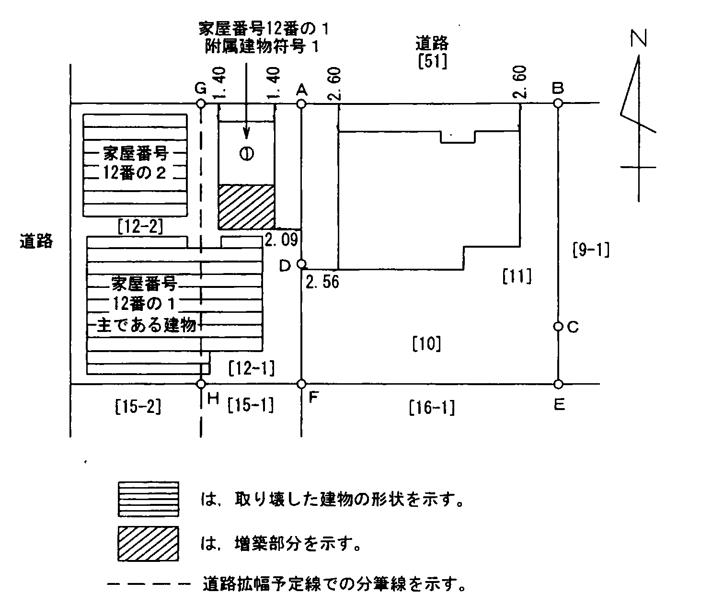
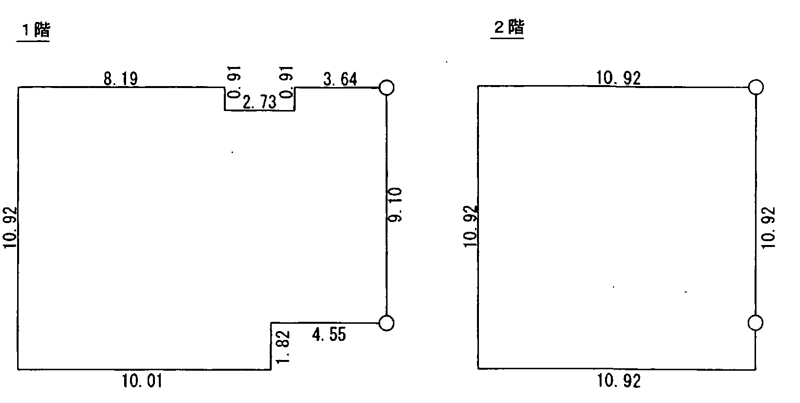
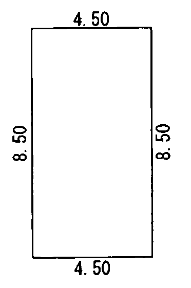
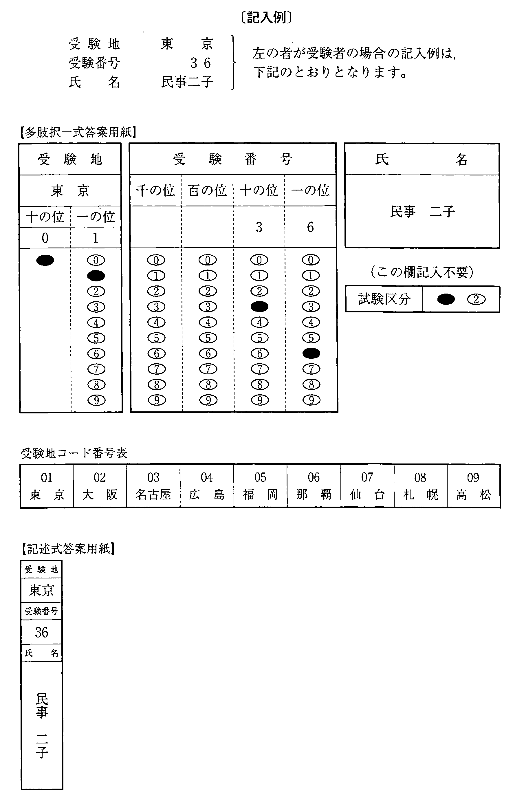

注意（問題冊子の表紙）

多肢択一式（第1問〜第20問）
第1問
未成年者Aが親権者Bの同意を得ることなく，自己が所有する甲土地についてCとの間で売買契約を締結した場合（以下この売買契約を「本件売買契約」という。）に関する次のアからオまでの記述のうち，判例の趣旨に照らし誤っているものの組合せは，後記1から5までのうち，どれか。
なお，Aは，婚姻しておらず，また，甲土地に係る処分の許可及び営業の許可も，受けていないものとする。
- アAが成年者であることを信じさせるため詐術を用いた場合には，Aが未成年者であることをCが知っていたときであっても，Aは，本件売買契約を取り消すことができない。
- イAは，成年に達する前であっても，Bの同意を得れば，本件売買契約を追認することができる。
- ウAが成年に達する前に，CがBに対して1か月以内に本件売買契約を追認するかどうかを確答すべき旨の催告をした場合において，Bがその期間内に確答を発しないときは，本件売買契約を追認したものとみなされる。
- エCが甲土地を更にDに売却した場合には，Aは，Dに対して取消しの意思表示をしなければ，本件売買契約を取り消すことができない。
- オAは，成年に達した後，異議をとどめずに本件売買契約の代金をCから受領した場合には，本件売買契約を取り消すことができない。
1 アウ2 アエ3 イウ4 イオ5 エオ
第2問
A所有の甲土地についての取得時効に関する次のアからオまでの記述のうち，判例の趣旨に照らし正しいものの組合せは，後記1から5までのうち，どれか。
- アBは，甲土地を無権利者Cから賃借した場合には，甲土地の賃借権を時効によって取得することはできない。
- イBは，甲土地が自己の所有する物であると過失なく信じ，所有の意思をもって，平穏に，かつ，公然と甲土地の占有を開始したものの，それから10年が経過する前に当該占有が隠秘のものとなった場合には，当該占有の開始から10年間占有を継続しても，甲土地の所有権を時効によって取得することはできない。
- ウBは，甲土地を無権利者Cから買い受け，甲土地が自己の所有する物であると過失なく信じ，所有の意思をもって，平穏に，かつ，公然と甲土地の占有を開始したものの，それから10年が経過する前に甲土地がAの所有する物であることを知った場合には，当該占有の開始から10年間占有を継続しても，甲土地の所有権を時効によって取得することはできない。
- エBは，甲土地が自己の所有する物であると過失なく信じ，所有の意思をもって，平穏に，かつ，公然と甲土地の占有を開始し，その3年後，甲土地がAの所有する物であることを知っているCに対して甲土地を売却した。この場合において，Cは，所有の意思をもって，平穏に，かつ，公然と甲土地の占有を始め，それから7年が経過したときには，甲土地の所有権を時効によって取得することができる。
- オBは，甲土地がAの所有する物であることを知りながら，所有の意思をもって，平穏に，かつ，公然と甲土地の占有を始め，その4年後，甲土地がBの所有する物であると過失なく信じたCに対して甲土地を売却した。この場合において，Cは，所有の意思をもって，平穏に，かつ，公然と甲土地の占有を始め，それから6年が経過したときには，甲土地の所有権を時効により取得することができる。
1 アウ2 アエ3 イエ4 イオ5 ウオ
第3問
占有権に関する次のアからオまでの記述のうち，判例の趣旨に照らし正しいものの組合せは，後記1から5までのうち，どれか。
- ア法人の代表者が建物を当該法人の機関として占有しつつ，当該代表者個人のためにも占有していた場合には，当該代表者は，その占有を奪われたときであっても，当該代表者個人としての占有回収の訴えを提起することができない。
- イ悪意の占有者であっても，その占有を奪われたときは，占有回収の訴えを提起することができる。
- ウ善意の占有者が本権の訴えにおいて敗訴したときは，その占有の開始の時から悪意の占有者とみなされる。
- エ代理人によって占有をする場合における占有の善意又は悪意は，その代理人について決する。
- オ代理人によって占有をする場合において，本人がその代理人に対して以後第三者のためにその物を占有することを命じ，その代理人がこれを承諾したときは，その第三者は，占有権を取得する。
1 アウ2 アオ3 イウ4 イエ5 エオ
第4問
次のアからオまでの記述における二つの表示に関する登記の各組合せのうち，一の申請情報によってAが申請することができるものは，幾つあるか。
なお，各記述における不動産は，いずれも，同一の登記所の管轄区域内に所在するものとする。
- ア所有権の登記名義人がAである甲土地の分筆の登記と表題部所有者がAである乙土地の分筆の登記
- イ表題部所有者がAである甲土地の分筆の登記と表題部所有者Aの住所についての更正の登記
- ウいずれも所有権の登記名義人がA及びBである甲土地（A及びBの持分は，各2分の1）と乙土地（Aの持分は3分の2，Bの持分は3分の1）が隣接する場合において，地目が山林であった甲土地及び乙土地が同時に宅地に造成されたときにする甲土地の地目の変更の登記と乙土地の地目の変更の登記
- エ所有権の登記名義人がAである甲建物の登記記録からその附属建物を分割する建物の分割の登記と当該附属建物を所有権の登記名義人がAである乙建物の附属建物とする建物の合併の登記
- オAが婚姻により配偶者の氏を称することとなった場合にする甲建物の表題部所有者Aの氏名についての変更の登記と乙土地の表題部所有者Aの氏名についての変更の登記
1 1個2 2個3 3個4 4個5 5個
第5問
書面申請における添付書面（磁気ディスクを除く。）の原本の還付に関する次の記述のうち，誤っているものの組合せは，後記1から5までのうち，どれか。
- ア登記官の調査完了前であっても，請求により，原本の還付を受けることができる。
- イ原本の還付は，申出により，原本を送付する方法によって受けることができる。
- ウ土地の分筆の登記の申請書に添付する当該土地の抵当権の登記名義人が当該抵当権を分筆後のいずれかの土地について消滅させることを承諾したことを証する書面の記名押印に係る印鑑に関する証明書は，原本の還付請求の対象となる。
- エ添付書面が偽造された書面その他の不正な登記の申請のために用いられた疑いがある書面である場合には，当該添付書面の原本の還付を請求することができない。
- オ会社が所有権の登記名義人である土地についての合筆の登記の申請書に添付する当該会社の代表者の資格を証する書面は，原本の還付請求の対象となる。※
1 アウ2 アオ3 イウ4 イエ5 エオ
※ オ 平成27年11月2日施行の不動産登記令改正により，法人が申請人となる場合は会社法人等番号を提供すれば代表者の資格を証する情報の提供を要しないこととなった（令7条1項1号イ）。
第6問
本人確認情報に関する次のアからオまでの記述のうち，誤っているものの組合せは，後記1から5までのうち，どれか。
- ア土地家屋調査士Aが本人確認情報を提供するときは，Aが登記の申請の代理を業とすることができる者であることを証する情報を併せて提供しなければならない。
- イ土地家屋調査士Aが本人確認情報を提供して登記の申請をしたものの，登記官が当該本人確認情報の内容を相当と認めることができない場合には，当該申請は，直ちに却下される。
- ウ土地家屋調査士Aが登記の申請の依頼を受ける以前から当該申請の申請人の氏名及び住所を知り，かつ，当該申請人との間に親族関係，1年以上にわたる取引関係その他の安定した継続的な関係の存在があるときは，本人確認情報として明らかにすべき「資格者代理人が申請人の氏名を知り，かつ，当該申請人と面識があるとき」に当たる。
- エ土地家屋調査士Aが法人である申請人Bの本人確認情報を提供する場合は，Aは，Bの代表者と面談しなければならない。
- オ土地家屋調査士Aが甲土地を乙土地に合筆する合筆の登記の申請をそれらの土地の所有権の登記名義人であるBから依頼を受けた場合において，当該申請の半年前に，AがBからその所有に係る丙土地を丁土地に合筆する合筆の登記の申請を依頼され，本人確認情報を提供してその申請をしていたときは，甲土地及び乙土地に係る合筆の登記の申請において提供する本人確認情報として明らかにすべき「資格者代理人が申請人の氏名を知り，かつ，当該申請人と面識があるとき」に当たる。
1 アウ2 アエ3 イエ4 イオ5 ウオ
第7問
次のアからオまでの記述のうち，第1欄に記載されている場合において，第2欄に記載されている登記を申請するときに，当該申請をAが単独ですることができないものの組合せは，後記1から5までのうち，どれか。
なお，代位による登記の申請は，考慮しないものとする。
| 第1欄 | 第2欄 |
|---|
| ア | 甲土地の表題部所有者としてA及びBが記録され，Aの持分が3分の2と，Bの持分が3分の1と記録されているものの，真正な持分は，Aが4分の3で，Bが4分の1である場合 | 甲土地についてする表題部所有者A及びBの持分の更正の登記 |
| イ | 甲建物及び乙建物の所有権の登記名義人であるCが死亡し，A及びBが共同相続した場合において，その後に甲建物と乙建物が合体して1個の丙建物となったとき。 | 丙建物の表題登記並びに甲建物及び乙建物の表題登記の抹消の登記 |
| ウ | 甲建物の表題部所有者としてAが記録されているものの，真正な所有者は，Bである場合 | 甲建物の表題部所有者の更正の登記 |
| エ | 甲土地の所有権の登記名義人としてA及びBが記録されている場合 | 更正後の地積が減少することとなる甲土地の地積の更正の登記 |
| オ | 甲区分建物の所有権の登記名義人としてBが記録されているものの，規約により，甲区分建物がA及びBの共用部分とされている場合 | 甲区分建物についてする共用部分である旨の登記 |
1 アイ2 アエ3 イウ4 ウオ5 エオ
第8問
地目に関する次のアからオまでの記述のうち，誤っているものの組合せは，後記1から5までのうち，どれか。
- ア牧場地域内にある牧畜のために使用する建物の敷地の地目は，その建物が永久的設備と認められるものに限り，宅地とする。
- イ地目が山林として記録されている土地について，その後に駐車場として使用されたものの，現在は宅地として使用されている場合には，直ちに，当該土地の地目を宅地とする地目に関する変更の登記をすることができる。
- ウ耕作地の区域内にある農具小屋の敷地の地目は，その建物が永久的設備と認められるものに限り，宅地とする。
- エ地目が山林として記録されている甲土地に接続する乙土地の地目が宅地である場合において，甲土地がテニスコートに造成されたときは，甲土地の地目を雑種地とする地目に関する変更の登記をすることができる。
- オ温泉の湧出口及びその維持に必要な土地の地目は，鉱泉地とする。
1 アイ2 アエ3 イウ4 ウオ5 エオ
第9問
分筆の登記に関する次のアからオまでの記述のうち，正しいものの組合せは，後記1から5までのうち，どれか。
- ア地目が畑である土地の分筆の登記を申請する場合には，添付情報として，農業委員会が分筆を許可したことを証する情報を提供しなければならない。
- イ甲土地の所有権の移転の仮登記の登記名義人は，甲土地の所有権の登記名義人の承諾を証する同人が作成した書面を提供して，甲土地の分筆の登記を申請することができる。
- ウ甲土地の一部が河川法の定める河川区域内の土地となった場合において，その旨の登記を登記所に嘱託するときは，河川管理者は，甲土地の所有権の登記名義人に代わって，甲土地の分筆の登記を登記所に嘱託することができる。
- エ登記官は，地図を作成するため必要があると認める場合において，甲土地の所有権の登記名義人の異議がないときは，職権で，甲土地の分筆の登記をすることができる。
- オ区分建物である建物の登記記録の表題部に敷地権の種類として所有権が記録されている場合には，当該敷地権の目的である土地の分筆の登記は，することができない。
1 アウ2 アオ3 イエ4 イオ5 ウエ
第10問
建物の所在に関する次のアからオまでの記述のうち，誤っているものの組合せは，後記1から5までのうち，どれか。
- ア建物の登記記録の表題部に不動産所在事項が記録される場合において，当該建物が他の都道府県にまたがって存在するときは，不動産所在事項に当該他の都道府県名が冠記される。
- イ甲区分建物を主である建物とし，甲区分建物が属する一棟の建物と同一の土地上に存する別の一棟の建物に属する乙区分建物を附属建物とする建物の表題登記を申請する場合には，申請情報として，乙区分建物の属する一棟の建物が所在する土地の地番を提供することを要しない。
- ウ建物が永久的な施設としてのさん橋の上に存する場合における当該建物の登記記録には，当該建物から最も近い土地の地番を用い，「何番地先」のように当該建物の所在が記録される。
- エ仮換地上に建物を新築した場合において，当該建物の表題登記の申請をするときは，申請情報である当該建物の所在として，従前の土地の地番を提供しなければならない。
- オ建物の登記記録の表題部に2筆以上の土地にまたがる建物の不動産所在事項を記録する場合には，床面積の多い部分又は主である建物の所在する土地の地番を先に記録し，他の土地の地番は後に記録する。
1 アエ2 アオ3 イウ4 イエ5 ウオ
第11問
家屋番号に関する次のアからオまでの記述のうち，正しいものの組合せは，後記1から5までのうち，どれか。
- ア建物の分割の登記を申請するときは，分割前の建物の家屋番号を申請情報の内容とすることを要しない。
- イ団地共用部分である旨の登記を申請する場合においては，団地共用部分を共用すべき者の所有する区分建物でない建物について当該建物の不動産番号を申請情報の内容とするときであっても，当該建物の家屋番号を申請情報の内容としなければならない。
- ウ建物の登記について，当該建物の所在する土地の地番の更正の登記を申請したときであっても，当該建物の家屋番号の更正の登記を申請することはできない。
- エ区分建物である建物の登記記録においては，区分建物の表題部に当該区分建物の家屋番号が記録されるほか，一棟の建物の表題部に当該一棟の建物に属する区分建物の家屋番号が記録される。
- オ主である建物の所在する土地と附属建物の所在する土地が管轄登記所を異にする場合において，建物の表題登記を申請したときは，主である建物のほか，附属建物にも，家屋番号が付される。
1 アイ2 アオ3 イエ4 ウエ5 ウオ
第12問
建物の種類又は構造に関する次のアからオまでの記述のうち，正しいものの組合せは，後記1から5までのうち，どれか。
- ア屋根の種類が2種類である建物について，その建物の構造を定める場合には，屋根の種類による区分として，屋根全体の面積に対する割合が10%以上の屋根の種類により，定めなければならない。
- イ床面積に算入しない部分があり，当該部分の屋根の種類と他の部分の屋根の種類が異なる建物について，その建物の構造を定める場合には，屋根の種類による区分として，床面積に算入しない部分の屋根の種類によって定めることを要しない。
- ウ建物を階層的に区分してその一部を1個の区分建物とした区分建物である建物の登記記録の表題部においては，最上階の区分建物についてのみ，その専有部分の建物の表示欄中の構造欄に屋根の種類が記録される。
- エ建物の主な用途が2以上の場合には，当該2以上の用途により，建物の種類を定める。
- オ建物の各利用部分ごとに用途を異にして利用されている形態にある建物の種類は，「多目的ビル」と定める。
1 アウ2 アエ3 イエ4 イオ5 ウオ
第13問
建物の床面積に関する次のアからオまでの記述のうち，誤っているものは，幾つあるか。
- ア建物の一部が上階まで吹抜になっている場合には，その吹抜の部分も，上階の床面積に算入する。
- イ地下街の建物の床面積は，常時一般に開放されている通路及び階段の部分を除き，壁又は柱等により区画された部分の面積により，定める。
- ウ建物の内部と外部にまたがってダストシュートがある場合には，その外部にある部分は，各階の床面積に算入しない。
- エ柱又は壁が傾斜している場合の床面積は，各階の床面の接着する壁その他の区画の中心線で囲まれた部分による。
- オ出窓は，その高さが1.5メートル以上のもので，その下部が床面と同一の高さにあるものに限り，床面積に算入する。
1 1個2 2個3 3個4 4個5 5個
第14問
建物の表示に関する登記の申請における添付情報に関する次のアからオまでの記述のうち，誤っているものは，幾つあるか。
- ア団地共用部分である旨の登記を申請する場合には，その旨を定めた規約を設定したことを証する情報を提供しなければならない。
- イ法定代理人によって建物の表題登記の申請をする場合において，当該法定代理人の権限を証する情報として戸籍の全部事項証明書を提供するときは，当該戸籍の全部事項証明書は，作成後3月以内のものであることを要しない。
- ウ登記名義人が同一である所有権の登記がある2個の建物の合体による登記の申請においては，当該合体に係る建物のうちいずれか1個の建物の所有権の登記名義人の登記識別情報を提供すれば足りる。
- エ甲区分建物及び乙区分建物が属する一棟の建物が新築された場合において，甲区分建物の所有者Aが乙区分建物の所有者Bに代わって乙区分建物についての表題登記を申請するときは，代位原因を証する情報として，甲区分建物の表題登記の申請情報に添付したAが甲区分建物の所有権を有することを証する情報を援用することができる。
- オ建物の表題登記を申請する場合に添付する表題部所有者となる者の住所を証する情報として，当該者に係る印鑑に関する証明書を提供することができる。
1 1個2 2個3 3個4 4個5 5個
第15問
相続があった場合の表示に関する登記の申請に関する次のアからオまでの記述のうち，誤っているものの組合せは，後記1から5までのうち，どれか。
- ア区分建物である建物を新築した場合において，その所有者について相続があったときは，相続人は，被相続人を表題部所有者とする当該建物についての表題登記を申請することができる。
- イ被相続人の名義で登記されている建物についての表題部の変更の登記を申請する場合においては，共同相続人の一人が当該申請をするときであっても，共同相続人全員に関する被相続人について相続があったことを証する情報を提供しなければならない。
- ウ甲土地の所有権の登記名義人が死亡し，その相続人がA，B及びCである場合において，「甲土地から乙土地を分筆した上，分筆後の甲土地をAが相続し，乙土地をBが相続する」旨の内容の遺産分割協議書を相続があったことを証する情報の一部として提供すれば，A及びBが共同して当該土地の分筆の登記の申請をすることができる。
- エ相続があったことを証する情報として戸籍の全部事項証明書及び遺産分割協議書を提供した場合には，「相続関係説明図」を提供すれば，原本と相違ない旨を記載した謄本を提出することなく，当該戸籍の全部事項証明書及び遺産分割協議書について原本の還付を請求することができる。
- オ被相続人の死亡前に滅失した被相続人名義の所有権の登記がされている建物の滅失の登記の申請は，共同相続人の一人がすることができる。
1 アエ2 アオ3 イウ4 イエ5 ウオ
第16問
区分建物の表題部の変更の登記に関する次のアからオまでの記述のうち，正しいものの組合せは，後記1から5までのうち，どれか。
- ア甲区分建物の所有権の登記名義人の申請により，甲区分建物が属する一棟の建物の床面積の変更の登記がされたときは，当該一棟の建物に属する乙区分建物の所有権の登記名義人は，乙区分建物について，当該一棟の建物の床面積の変更の登記を申請することを要しない。
- イ区分建物について，当該区分建物が属する一棟の建物の構造の変更の登記を申請する場合には，既に登記された一棟の建物の名称を申請情報の内容とするときでも，変更前の一棟の建物の構造及び床面積を申請情報の内容としなければならない。
- ウ敷地権の目的である土地として甲土地及び乙土地が登記されている敷地権付き区分建物について，一部の取壊しによって甲土地上に当該区分建物が属する一棟の建物が所在しなくなった場合には，その取壊しの日から1か月以内に，敷地権が敷地権でなくなったことによる区分建物である建物の登記記録の表題部の変更の登記を申請しなければならない。
- エ分筆により区分建物が属する一棟の建物の所在しない土地が生じた場合において，当該区分建物についてその属する一棟の建物の所在の変更の登記を申請するときは，添付情報として，変更後の建物図面を提供しなければならない。
- オ区分建物の床面積が増加した後，所有権の登記名義人から当該区分建物の所有権を取得した者は，所有権の移転の登記をする前においても，当該区分建物の表題部の変更の登記を申請する義務を負う。
1 アエ2 アオ3 イウ4 イエ5 ウオ
第17問
乙建物を甲建物に合併する建物の合併の登記に関する次のアからオまでの記述のうち，誤っているものの組合せは，後記1から5までのうち，どれか。
なお，各記述において，甲建物と乙建物のいずれにも抵当権若しくは賃借権の登記又は所有権の仮登記がある場合は，各登記又は仮登記は，登記の目的，申請の受付年月日及び受付番号並びに登記原因及びその日付が同一であるものとする。
- ア甲建物と乙建物のいずれにも抵当権の設定の登記がある場合において，乙建物についてのみ抵当権の債権額の変更の登記がされているときは，建物の合併の登記をすることができない。
- イ乙建物についてのみ抵当権の設定の登記がある場合においても，当該抵当権の抵当権者が当該抵当権を消滅させることを承諾したことを証する情報を提供すれば，建物の合併の登記をすることができる。
- ウ甲建物と乙建物のいずれにも賃借権の設定の登記がある場合においても，建物の合併の登記をすることができる。
- エ甲建物と乙建物がいずれも区分建物であり，甲建物についてのみ敷地権の登記があるときにおいても，建物の合併の登記をすることができる。
- オ甲建物と乙建物のいずれにも所有権の仮登記がある場合には，建物の合併の登記をすることができない。
1 アウ2 アオ3 イウ4 イエ5 エオ
第18問
次の対話は，筆界特定に関する教授と学生の対話である。教授の質問に対する次のアからオまでの学生の解答のうち，誤っているものの組合せは，後記1から5までのうち，どれか。
教授： 筆界特定登記官によって筆界特定がされ，筆界特定書が書面をもって作成されたという事例について，考えてみましょう。
筆界特定登記官が筆界特定をした後は，どのような手続が行われますか。学生：ア 筆界特定登記官は，遅滞なく，筆界特定の申請人に対し，筆界特定書の写しを交付する方法により当該筆界特定書の内容を通知するとともに，筆界特定をした旨を公告し，かつ，関係人に通知しなければなりません。教授： 筆界特定の対象土地の所在地を管轄する登記所がA法務局のB出張所である場合において，筆界特定がされた後は，筆界特定書を含む筆界特定手続記録は，どこに保管されますか。学生：イ 筆界特定書を含む筆界特定手続記録は，B出張所ではなく，A法務局において保管されます。教授： 筆界特定書を含む筆界特定手続記録に記載された情報の保存期間は，どのようになっていますか。学生：ウ 筆界特定書を含む筆界特定手続記録に記載された情報の保存期間は，永久とされています。教授： 筆界特定書が作成された場合においては，誰でも当該筆界特定書の写しの交付を請求することはできますか。学生：エ はい。何人も，登記官に対し，手数料を納付して，筆界特定書の写しの交付を請求することができます。教授： 甲土地の登記記録に筆界特定がされた旨の記録がある場合において，甲土地から乙土地を分筆する分筆の登記をするときは，分筆後の乙土地につき，筆界特定がされた旨が記録されますか。学生：オ 筆界特定がされた旨の記録が乙土地の登記記録に転写されることとなります。
1 アイ2 アオ3 イウ4 ウエ5 エオ
第19問
登記官の処分に対する審査請求に関する次のアからオまでの記述のうち，誤っているものの組合せは，後記1から5までのうち，どれか。
- アAが所有権の登記名義人である土地の分筆の登記の申請が却下された場合において，Aがその却下処分につき審査請求をしたときは，当該土地の抵当権の登記名義人であるBは，審査庁の許可を得て，参加人として当該審査請求に参加することができる。
- イ審査請求は，登記官を経由してしなければならない。
- ウ審査請求は，処分があったことを知った日の翌日から起算して60日以内に，しなければならない。※
- エ法務局又は地方法務局の長が審査請求につき裁決をしたときは，裁決書の謄本を審査請求人及び登記官に交付する。
- オ当該登記官を監督する法務局又は地方法務局の長は，審査請求を理由があると認めるときは，登記官に相当の処分を命じ，その旨を審査請求人のほか登記上の利害関係人に通知しなければならない。
1 アウ2 アオ3 イウ4 イエ5 エオ
※ ウ 平成26年の行政不服審査法改正（平成28年4月1日施行）で審査請求期間は「処分を知った日の翌日から60日」から「3か月」に改められた。
第20問
土地家屋調査士の義務に関する次のアからオまでの記述のうち，正しいものは，幾つあるか。
- ア土地家屋調査士は，筆界特定の手続についての代理の依頼を拒むことはできるが，正当な事由がある場合でなければ，当該代理についての相談の依頼を拒むことはできない。
- イ土地家屋調査士がその業務に関して虚偽の調査又は測量をしたときは，当該土地家屋調査士は，1年以下の懲役又は100万円以下の罰金に処せられる。※
- ウ土地家屋調査士は，その業務を行う地域における土地の筆界を明らかにするための方法に関する慣習その他の土地家屋調査士の業務についての知識を深めるよう，努めなければならない。
- エ土地家屋調査士は，2以上の事務所を設けることができない。
- オ土地家屋調査士は，会則の定めるところにより，業務上使用する職印を定めなければならない。
1 1個2 2個3 3個4 4個5 5個
※ イ 刑法等の一部を改正する法律（令和4年法律第67号，令和7年6月1日施行）により懲役は拘禁刑に改められ，現行法では「1年以下の拘禁刑又は100万円以下の罰金」となっている。
第21問（土地）
第21問土地家屋調査士法務太郎は，山川一郎及び海川二郎から，A市B町二丁目5番の土地（以下「本件土地」という。）の登記に関する相談を受け，（別紙1）の【土地家屋調査士法務太郎の聴取記録の概要】のとおり，事情を聴取し，必要となる全ての表示に関する登記の申請手続についての代理並びに当該登記について必要な調査及び測量の依頼を受け，（別紙2）の【土地家屋調査士法務太郎の調査及び測量の結果の概要】のとおり，調査及び測量を行った。
以上に基づき，次の問1から4までに答えなさい。
問1土地家屋調査士法務太郎の測量成果からB点及びF点の座標値を求め，別紙第21問答案用紙の第1欄に記載しなさい。
問2本件土地について申請すべき登記に関し，どうして当該登記を申請すべきと考えたのかにつき，土地家屋調査士法務太郎として山川一郎及び海川二郎に対して説明すべき内容について，地目の意義と公示の関係に言及しつつ，別紙第21問答案用紙の第2欄に記載しなさい。
問3別紙第21問答案用紙の第3欄の登記申請書の空欄を埋めて，問2で答えた登記の申請書を完成させなさい。ただし，申請は1件の申請で行い，地積は測量成果である座標値を用いて座標法により求積するものとする。
問4別紙第21問答案用紙の第4欄を用いて，問3の登記の申請書に添付する地積測量図を完成させなさい。
(注)1本問における行為は全て適法に行われており，法律上必要な書類は全て適法に作成されているものとする。
2登記の申請は，書面申請の方法によってするものとする。
3座標値は，計算結果の小数点以下第3位を四捨五入し，小数点以下第2位までとすること。
4地積測量図には，測量の成果から求めた筆界点間の辺長につき，計算結果の小数点以下第3位を四捨五入した上，小数点以下第2位までを記載すること。
5各筆界点の座標値，平面直角座標系の番号又は記号並びに地積及びその求積方法は，記載することを要しない。
6A市の基準点の各点は，地積測量図にその地点を明示して名称を付して記載するものとし，座標値を記載することを要しない。
7解答に当たって関数の値が必要となる場合には，次の【三角関数真数表】の値を用いること。
8訂正，加入又は削除をしたときは，訂正は訂正すべき字句に線を引き，近接箇所に訂正後の字句を記載し，加入は加入する部分を明示して行い，削除は削除すべき字句に線を引いて，訂正，加入又は削除をしたことが明確に分かるように記載すること。
【三角関数真数表】
| 角度 | sin | cos | tan |
|---|
| 0°38′ 6″ | 0.01108 | 0.99993 | 0.01108 |
| 5°46′21″ | 0.10057 | 0.99492 | 0.10109 |
| 7°37′35″ | 0.13271 | 0.99115 | 0.13389 |
| 8° 9′52″ | 0.14201 | 0.98986 | 0.14346 |
| 13°23′56″ | 0.23172 | 0.97278 | 0.23821 |
（別紙1）
【土地家屋調査士法務太郎の聴取記録の概要】
1A市B町二丁目20番1号に住所を有する山川一郎は，本件土地の近隣において工務店を営んでおり，平成8年10月から資材置場として本件土地を賃借している。
2平成25年1月，山川一郎は，A市B町三丁目4番5号に住所を有する海川二郎から，その承諾を得て，本件土地上に自宅とする建物を建築することとした。
32の建物は，平成25年6月に完成したが，本件土地においては，ブロック塀により，自宅の敷地として利用する部分と資材置場として利用する部分とを区画して分けている。
4山川一郎と海川二郎は，本件土地について，その登記記録を実際の利用形態に合致させることを希望している。
（別紙2）
【土地家屋調査士法務太郎の調査及び測量の結果の概要】
1資料に関する調査の結果
(1)本件土地に関する登記記録等の調査結果（現在事項）
ア本件土地
（表題部）
| 所 在 | A市B町二丁目 |
|---|
| 地 番 | 5番 |
|---|
| 地 目 | 雑種地 |
|---|
| 地 積 | 255 ㎡ |
|---|
（権利部）
| 甲 区 | 順位3番 所有権移転 |
|---|
| A市B町三丁目4番5号 海川二郎 |
|---|
| 乙 区 | 順位5番 抵当権設定 |
|---|
| 抵当権者 A市B町一丁目1番1号 甲信用金庫 |
|---|
| 共同担保 目録（や）第7061号 |
|---|
イ山川一郎の自宅建物
（表題部）
| 所 在 | A市B町二丁目5番地 |
|---|
| 家屋番号 | 5番 |
|---|
| 種 類 | 居宅 |
|---|
| 構 造 | 木造スレートぶき2階建 |
|---|
| 床面積 | 1階 35.83 ㎡ 2階 35.83 ㎡ |
|---|
| 原因及びその日付 | 平成25年6月21日新築 |
|---|
（権利部）
| 甲 区 | 順位1番 所有権保存 |
|---|
| A市B町二丁目20番1号 山川一郎 |
|---|
| 乙 区 | 順位1番 抵当権設定 |
|---|
| 抵当権者 A市B町一丁目1番1号 甲信用金庫 |
|---|
(2)本件土地及び隣接地に係る図面等の調査結果
本件土地の隣接地であるA市B町二丁目3番の土地及び6番の土地については，いずれも，地積測量図が備え付けられており，また，山川一郎の自宅建物である家屋番号5番の建物には，建物図面が備え付けられている。
(3)A市道路管理課における道路境界の調査結果
A市道路管理課において，道路境界の調査を行った結果，本件土地については，道路境界の確定がされていた。
また，今回の測量の結果とA市備付道路境界図が一致していることを確認した。
2本件土地の利用状況，境界標の状況並びに立会い及び測量の結果
(1)本件土地の利用状況
築造したブロック塀の西側は建物の敷地として，東側は資材置場として，それぞれ利用されている。
(2)境界標の状況
A点，C点及びG点には市のコンクリート杭が，D点及びE点には石杭が，それぞれ埋設されている。
(3)立会い等
A市道路管理課職員及び隣接土地所有者から，道路及び隣接する境界について，それぞれ確認が得られた。
なお，B点及びF点は，分筆点であり，金属標を設置した。
本件土地の利害関係人から，申請すべき登記をすることの承諾が得られた。
(4)測量の結果
アA市基準点であるA100からA102までを器械点として観測を行った結果により得られたデータは，(ア)から(ウ)までのとおりである。
(ア)A市基準点成果表
| 名称 | X座標(m) | Y座標(m) |
|---|
| A100 | 137.06 | 159.96 |
| A101 | 153.30 | 159.78 |
| A102 | 153.81 | 182.84 |
(イ)観測データ
| 器械点 | 後視点 | 測点 | 水平角 | 平面距離(m) |
|---|
| A100 | A101 | E | 省略 | 14.60 |
| A101 | A100 | B | 278°47′58″ | 11.76 |
| A102 | A101 | C | 省略 | 2.50 |
(ウ)測量によって得られた座標及び距離
| 名称 | X座標(m) | Y座標(m) |
|---|
| A | 151.43 | 162.08 |
| D | 139.19 | 181.35 |
| G | 139.19 | 162.08 |
イ測量年月日は平成25年8月19日であり，測量及び調査の結果は次の〔調査素図〕のとおりである。
〔調査素図〕

(注)1A100，A101及びA102は，許容誤差内にあることを確認することができた。
2B点はA点及びC点を結ぶ直線上の点であり，F点はE点及びG点を結ぶ直線上の点である。
3G点，D点及びF点を結んだ夾角は5°46′21″であり，D点，F点及びG点を結んだ夾角は166°36′4″である。
4B，C，D，E，F及びBの各点を順次直線で結んだ範囲の土地について，座標法により求積した地積は，141.69730 ㎡である。
5なお，A市基準点成果を用いて行う測量においては，距離に関する補正計算は行わないものとする。
第22問（建物）
第22問C市D町一丁目3番2号に住所を有する甲野春男及び甲野冬子は，C市D町一丁目12番所在の家屋番号12番の1の建物（以下「本件旧建物」という。）を共有していたが，道路の拡幅工事に伴い，本件旧建物のうちの主である建物については解体した上でその建材を用いて隣地に再築し（以下再築した建物を「本件新建物」という。），本件旧建物のうちの附属建物については増改築工事を行うとともに，同じく共有していた家屋番号12番の2の建物（以下「本件取壊建物」という。）については取り壊した。
土地家屋調査士民事花子は，甲野春男及び甲野冬子から，本件旧建物，本件新建物及び本件取壊建物に関し必要となる全ての表示に関する登記の申請手続の代理並びに当該登記について必要な調査及び測量を依頼され，（別紙1）の【土地家屋調査士民事花子の調査及び測量の結果】並びに（別紙2）の【本件旧建物の登記記録の抜粋】及び（別紙3）の【本件取壊建物の登記記録の抜粋】のとおり，調査及び測量を行った。
以上に基づき，次の問1から4までに答えなさい。
問1別紙第22問答案用紙第1欄の登記申請書の空欄を埋めて，土地家屋調査士民事花子が申請すべき本件旧建物に関する登記の申請書を完成させなさい。
問2別紙第22問答案用紙第2欄の登記申請書の空欄を埋めて，土地家屋調査士民事花子が申請すべき本件新建物に関する登記の申請書を完成させなさい。
問3土地家屋調査士民事花子は，甲野春男から，本件取壊建物に関する登記の申請に関し，自分だけが関与し，甲野冬子は関与しない方法を採ることができないかとの依頼を受けたことから，甲野春男に対し，必要となる登記の内容，その申請の可否及び根拠について説明した。この場合における土地家屋調査士民事花子の説明として適切な内容について，別紙第22問答案用紙第3欄を用いて，記載しなさい。
問4別紙第22問答案用紙第4欄を用いて，問2の申請書に添付すべき建物図面及び各階平面図を完成させなさい。
(注)1本問における行為は全て適法に行われており，法律上必要な書類は全て適法に作成されているものとする。
2登記の申請は，書面申請の方法によってするものとする。
3建物図面は500分の1の縮尺により，各階平面図は250分の1の縮尺により，それぞれ作成すること。
4訂正，加入又は削除をしたときは，訂正は訂正すべき字句に線を引き，近接箇所に訂正後の字句を記載し，加入は加入する部分を明示して行い，削除は削除すべき字句に線を引いて，訂正，加入又は削除をしたことが明確に分かるように記載すること。
（別紙1）
【土地家屋調査士民事花子の調査及び測量の結果】
1甲野春男及び甲野冬子は，本件旧建物のうちの主である建物を一旦解体し，その建材を用いて，隣地において，次の〔各階平面見取図1〕のとおり，解体前の当該主である建物と同一の形状の本件新建物を再築した（本件新建物の種類，構造及び床面積については，解体前の当該主である建物の登記記録との相違点はない。）。また，本件旧建物のうちの附属建物については，次の〔各階平面見取図2〕のとおり増改築工事を行った上，現在，美容院として使用している。
2本件旧建物のうちの主である建物及び本件取壊建物の解体工事は平成25年7月26日に完了し，本件新建物の再築工事は同年8月22日に完了した。
本件旧建物のうちの附属建物の増改築工事は同年8月18日に完了しており，その構造は増改築工事の前と後とで同一である。
31及び2の工事は，いずれも株式会社乙川建設が行っており，工事に当たって新たに必要となった建築材料も同社が提供したが，甲野春男及び甲野冬子は，その完成と同時に材料費及び施工費を同社に支払い，登記の申請に必要となる書類も同社から受領している。
4本件新建物及び本件旧建物のうちの増改築工事後の附属建物に係る甲野春男及び甲野冬子の各共有持分は，いずれも2分の1である。
5C市D町一丁目10番の土地は次の〔概略図〕の点D，C，E，F及びDを順次直線で結んだ範囲の土地であり，C市D町一丁目11番の土地は〔概略図〕の点A，B，C，D及びAを順次直線で結んだ範囲の土地である。
6C市D町一丁目12番の土地は，道路拡幅予定線である〔概略図〕の点G及びHを結ぶ直線を分筆線として，12番1の土地と12番2の土地に分筆する分筆の登記が平成25年8月5日付けでされている。
〔概略図〕

〔筆界点の座標成果〕
| 点名 | X座標 | Y座標 |
|---|
| A | 39.24 | 73.39 |
| B | 39.24 | 93.96 |
| C | 21.64 | 94.91 |
| D | 27.15 | 74.86 |
| E | 17.07 | 95.16 |
| F | 17.07 | 76.09 |
| G | 39.24 | 66.57 |
| H | 17.07 | 66.57 |
〔各階平面見取図1〕

〔各階平面見取図2〕

(注)1〔概略図〕は，現地調査を行った際に，簡易に作成したものである。
2〔概略図〕中の[ ]内の数字は，土地の地番である。
3距離を表す〔概略図〕，〔筆界点の座標成果〕，〔各階平面見取図1〕及び〔各階平面見取図2〕中の数値の単位は，全てメートルである。
4〔概略図〕中の敷地境界からの距離は，全て外壁までの距離である。
5各建物の構造について，鉄骨柱の両面は，被覆されている。
なお，測定値は，柱の中心からのものである。
6各建物の壁厚は，全て20 cmである。
7各建物の天井までの高さは，全て2.5 m以上である。
8各建物の隅角部は，全て直角である。
9〔各階平面見取図1〕中の○印は，各階の重なる部分を示す。
（別紙2）
【本件旧建物の登記記録の抜粋】
（表題部）
| 所 在 | C市D町一丁目12番地 |
|---|
| 家屋番号 | 12番の1 |
|---|
| 主である建物 | 種 類 倉庫 |
|---|
| 構 造 軽量鉄骨造亜鉛メッキ鋼板ぶき2階建 |
|---|
| 附属建物1 | 種 類 物置 |
|---|
| 構 造 鉄骨造陸屋根平家建 |
|---|
| 床面積 22.50 ㎡ |
|---|
| 原因及びその日付 | 平成2年6月5日 新築 |
|---|
（権利部）
| 甲区 | 所有権登記名義人 C市D町一丁目3番2号 持分2分の1 甲野春男 |
|---|
| C市D町一丁目3番2号 持分2分の1 甲野冬子 |
|---|
| 乙区 | なし |
|---|
（別紙3）
【本件取壊建物の登記記録の抜粋】
（表題部）
| 所 在 | C市D町一丁目12番地 |
|---|
| 家屋番号 | 12番の2 |
|---|
| 種 類 店舗 |
|---|
| 構 造 鉄骨造陸屋根平家建 |
|---|
| 床面積 68.00 ㎡ |
|---|
| 原因及びその日付 | 平成3年6月25日 新築 |
|---|
（権利部）
| 甲区 | 所有権登記名義人 C市D町一丁目3番2号 持分2分の1 甲野春男 |
|---|
| C市D町一丁目3番2号 持分2分の1 甲野冬子 |
|---|
| 乙区 | なし |
|---|
答案用紙の記入例

多肢択一式の正解
| 第1問 | 2 |
|---|
| 第2問 | 3 |
|---|
| 第3問 | 4 |
|---|
| 第4問 | 5 |
|---|
| 第5問 | 1 |
|---|
| 第6問 | 3 |
|---|
| 第7問 | 4 |
|---|
| 第8問 | 2 |
|---|
| 第9問 | 5 |
|---|
| 第10問 | 4 |
|---|
| 第11問 | 4 |
|---|
| 第12問 | 3 |
|---|
| 第13問 | 2 |
|---|
| 第14問 | 1 |
|---|
| 第15問 | 4 |
|---|
| 第16問 | 1 |
|---|
| 第17問 | 3 |
|---|
| 第18問 | 3 |
|---|
| 第19問 | 1 |
|---|
| 第20問 | 4 |
|---|
法改正の注
- 第5問オ 平成27年11月2日施行の不動産登記令改正により，法人が申請人となる場合は会社法人等番号を提供すれば代表者の資格を証する情報の提供を要しないこととなった（令7条1項1号イ）。
- 第19問ウ 平成26年の行政不服審査法改正（平成28年4月1日施行）で審査請求期間は「処分を知った日の翌日から60日」から「3か月」に改められた。
- 第20問イ 刑法等の一部を改正する法律（令和4年法律第67号，令和7年6月1日施行）により懲役は拘禁刑に改められ，現行法では「1年以下の拘禁刑又は100万円以下の罰金」となっている。
出典: 法務省 平成25年度土地家屋調査士試験 午後の部 問題（冊子）。冊子の体裁（ページ番号・冊子記号）は除き、読点などの表記は原文に合わせています。